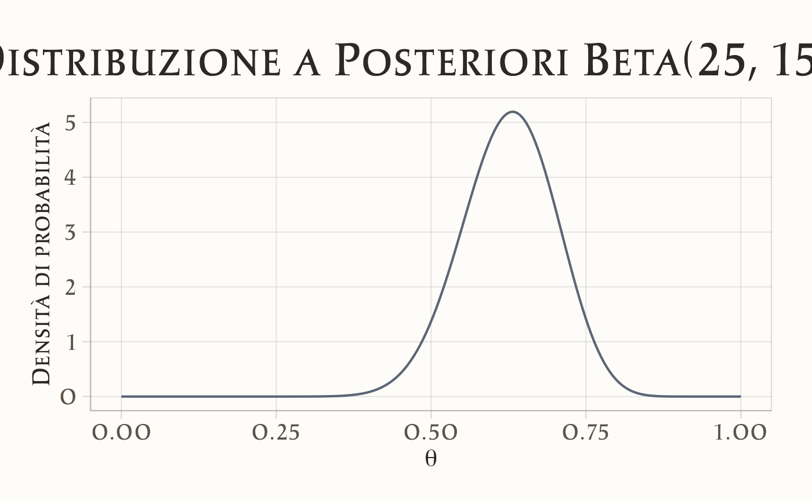

here::here("code", "_common.R") |>
source()
# Load packages
if (!requireNamespace("pacman")) install.packages("pacman")
pacman::p_load(mice)7 Sintesi a posteriori
“The summary of a posterior distribution is an essential step for its interpretation. Point estimators and credible intervals are the most common Bayesian answers, but they should not make us forget the richness of the entire posterior.”
– Christian P. Robert, The Bayesian Choice (2007)
Introduzione
Nei capitoli precedenti abbiamo imparato a costruire distribuzioni a posteriori combinando la nostra conoscenza preliminare (prior) con i dati osservati attraverso la verosimiglianza. Abbiamo visto come questo processo si realizzi in casi semplici, come la stima di una proporzione di successi con il modello Beta–Binomiale, e come possa essere generalizzato grazie al concetto di famiglie coniugate. Ora ci poniamo una domanda fondamentale: una volta che abbiamo ottenuto una distribuzione a posteriori, come possiamo riassumerla e comunicarla in modo chiaro ed efficace?
Il posterior non è un singolo numero, ma un’intera distribuzione che rappresenta la nostra incertezza sul parametro. Nella pratica della ricerca psicologica, tuttavia, dobbiamo spesso sintetizzare queste informazioni per presentarle nei risultati di un articolo o per confrontarle con altre stime. Questo capitolo è dedicato proprio a questa esigenza: mostreremo come ricavare quantità riassuntive (media, mediana, moda) e come costruire intervalli credibili che esprimano in modo trasparente i valori più plausibili.
L’obiettivo non è ridurre l’inferenza bayesiana alla ricerca di un punto o di un intervallo, ma imparare a comunicare l’incertezza in modo comprensibile, senza perdere la ricchezza informativa del posterior. Come vedremo, anche nei contesti più complessi, la capacità di sintetizzare correttamente le distribuzioni a posteriori è ciò che distingue un’analisi meramente tecnica da una presentazione scientifica chiara e convincente.
Panoramica del capitolo
- Distribuzione a posteriori = conoscenza aggiornata.
- Stime puntuali: MAP, media, mediana.
- Incertezza: varianza e deviazione standard.
- Intervalli di credibilità: simmetrici e HPD.
- Verifica di ipotesi: probabilità a posteriori.
7.1 Riepilogo numerico
La distribuzione a posteriori contiene in sé tutte le informazioni disponibili sui potenziali valori del parametro. Nel caso di un parametro unidimensionale o bidimensionale, possiamo rappresentare la distribuzione a posteriori mediante un grafico \(p(\theta \mid y)\). Tuttavia, quando ci troviamo di fronte a vettori di parametri con più di due dimensioni, risulta vantaggioso eseguire una sintesi numerica della distribuzione a posteriori. Possiamo distinguere due forme di sintesi numerica della distribuzione a posteriori: stima puntuale e intervallo di credibilità.
7.2 Stima puntuale
Nel contesto dell’inferenza bayesiana, stimare il valore più credibile di un parametro \(\theta\) a partire dalla distribuzione a posteriori può avvenire attraverso tre statistiche principali: moda, mediana e media. La scelta tra queste dipende dalla forma della distribuzione a posteriori. Queste statistiche forniscono una stima puntuale della tendenza centrale della distribuzione, ossia il valore a cui attribuiamo il massimo grado di fiducia soggettiva, basandoci sia sui dati osservati sia sulle credenze a priori.
Moda (Massimo a Posteriori, MAP)
La moda della distribuzione a posteriori, nota come stima di massimo a posteriori (MAP), corrisponde al valore del parametro \(\theta\) a cui è associata la massima densità di probabilità. Questo concetto rappresenta l’estensione bayesiana della classica stima di massima verosimiglianza (MLE), definita come:
\[ \hat{\theta}_{\text{ML}} = \arg \max_\theta L(\theta \mid y), \] dove \(L(\theta \mid y)\) è la funzione di verosimiglianza. Nell’approccio bayesiano, l’informazione a priori \(p(\theta)\) viene incorporata attraverso il teorema di Bayes, portando alla definizione della stima MAP:
\[ \hat{\theta}_{\text{MAP}} = \arg \max_\theta \, L(\theta \mid y) \, p(\theta). \] In altre parole, \(\hat{\theta}_{\text{MAP}}\) massimizza la densità a posteriori non normalizzata, combinando in modo esplicito l’evidenza empirica con la conoscenza pregressa.
7.2.0.1 Limitazioni della stima MAP
Nonostante l’interpretazione intuitiva, la stima MAP presenta alcune limitazioni di cui è importante essere consapevoli. In primo luogo, la sua determinazione può risultare computazionalmente impegnativa, specialmente quando la distribuzione a posteriori viene campionata mediante metodi MCMC: individuare con precisione il massimo in uno spazio di parametri ad alta dimensionalità o con forme complesse richiede tecniche specifiche e può essere instabile.
In secondo luogo, la bontà della stima MAP dipende fortemente dalla forma della distribuzione a posteriori. In presenza di asimmetrie marcate o di multimodalità, il massimo globale potrebbe non essere rappresentativo della regione di alta probabilità, soprattutto se associato a un picco stretto ma isolato, mentre la maggior parte della massa probabilistica si trova altrove.
Infine, il MAP è intrinsecamente meno robusto di altre statistiche centrali, come la media o la mediana a posteriori, in quanto basato esclusivamente sul valore di massimo densità, ignorando la forma complessiva della distribuzione. Ciò lo rende sensibile a variazioni nella parametrizzazione del modello e poco informativo riguardo all’incertezza complessiva sul parametro.
Media a posteriori
La media a posteriori rappresenta il valore atteso del parametro \(\theta\) rispetto alla sua distribuzione a posteriori. Formalmente, essa è definita come:
\[ \mathbb{E}[\theta \mid y] = \int \theta \, p(\theta \mid y) \, d\theta. \] Questa quantità costituisce una stima di \(\theta\) che tiene conto dell’intera distribuzione a posteriori, integrando su tutti i possibili valori del parametro. Una proprietà notevole della media a posteriori è quella di essere lo stimatore che minimizza l’errore quadratico medio (MSE) nella previsione di \(\theta\), il che ne giustifica l’ampio utilizzo in contesti di ottimizzazione statistica.
Tuttavia, in presenza di distribuzioni a posteriori marcatamente asimmetriche o con code pesanti, la media potrebbe non rappresentare adeguatamente la regione di massima densità di probabilità. In tali casi, valori estremi possono influenzare eccessivamente la stima, allontanando la media dalla zona in cui è concentrata la maggior parte della massa probabilistica. Per questo motivo, in situazioni di asimmetria pronunciata, altre statistiche come la mediana o la moda a posteriori possono offrire una rappresentazione più appropriata della tendenza centrale.
Mediana a posteriori
La mediana a posteriori è definita come il valore del parametro \(\theta\) che divide la distribuzione a posteriori in due parti di uguale probabilità: il 50% della massa probabilistica si trova al di sotto di tale valore e il restante 50% al di sopra. Formalmente, essa soddisfa la condizione:
\[ P(\theta \leq \hat{\theta}_{\text{med}} \mid y) = 0.5. \]
Rispetto alla media e alla moda a posteriori, la mediana offre una misura di tendenza centrale particolarmente robusta, in quanto poco sensibile alla presenza di valori estremi o code distributive pesanti. Questa proprietà la rende preferibile in contesti in cui la distribuzione a posteriori presenta marcate asimmetrie o è multimodale, situazioni in cui la media può essere distortta da valori anomali e la moda può risultare instabile o non unica. Grazie alla sua stabilità, la mediana a posteriori fornisce una rappresentazione più affidabile della posizione centrale del parametro quando la forma della distribuzione è irregolare, garantendo una sintesi inferenziale solida anche in condizioni di elevata variabilità o non normalità.
Misurare l’incertezza: varianza a posteriori
Oltre a individuare il valore più plausibile del parametro \(\theta\), è fondamentale quantificare l’incertezza residua associata alla nostra stima. A questo scopo, la varianza a posteriori fornisce una misura della dispersione dei valori di \(\theta\) attorno alla sua media, condizionatamente ai dati osservati \(y\). Formalmente, essa è definita come:
\[ \mathbb{V}(\theta \mid y) = \mathbb{E}\left[(\theta - \mathbb{E}[\theta \mid y])^2 \mid y \right] = \int (\theta - \mathbb{E}[\theta \mid y])^2 \, p(\theta \mid y) \, d\theta. \]
Un modo equivalente per calcolarla è attraverso l’identità:
\[ \mathbb{V}(\theta \mid y) = \mathbb{E}[\theta^2 \mid y] - \left(\mathbb{E}[\theta \mid y]\right)^2. \]
Per interpretare più facilmente l’incertezza nella stessa unità di misura del parametro \(\theta\), è utile considerare la deviazione standard a posteriori, data semplicemente dalla radice quadrata della varianza.
In conclusione, mentre la moda (MAP), la media e la mediana a posteriori forniscono diverse misure di tendenza centrale per la stima puntuale di \(\theta\), la varianza (e la deviazione standard) a posteriori ne quantificano l’affidabilità. La scelta tra le diverse statistiche dipende dalla forma della distribuzione a posteriori e dagli obiettivi dell’analisi. Nel loro insieme, questi indicatori consentono di comunicare in modo sintetico non solo la migliore stima del parametro, ma anche il grado di confidenza ad essa associato, elemento cruciale in qualsiasi processo inferenziale.
7.3 Intervallo di credibilità
Nell’inferenza bayesiana, l’intervallo di credibilità è uno strumento utilizzato per definire un intervallo che contiene una determinata percentuale della massa della distribuzione a posteriori del parametro \(\theta\). Questo intervallo riflette l’incertezza associata alla stima del parametro: un intervallo più ampio suggerisce una maggiore incertezza. Lo scopo principale dell’intervallo di credibilità è fornire una misura quantitativa dell’incertezza riguardante \(\theta\).
A differenza degli intervalli di confidenza frequentisti, non esiste un unico intervallo di credibilità per un dato livello di confidenza \((1 - \alpha) \cdot 100\%\). In effetti, è possibile costruire un numero infinito di tali intervalli. Per questo motivo, è necessario stabilire criteri aggiuntivi per selezionare l’intervallo di credibilità più appropriato. Tra le opzioni più comuni ci sono l’intervallo di credibilità simmetrico e l’intervallo di massima densità posteriore (HPD).
Intervallo di credibilità simmetrico
Questo tipo di intervallo è centrato rispetto al punto di stima puntuale. Se \(\hat{\theta}\) rappresenta la stima del parametro, l’intervallo simmetrico avrà la forma \((\hat{\theta} - a, \hat{\theta} + a)\), dove \(a\) è un valore positivo scelto in modo tale che la massa totale inclusa sia pari a \((1 - \alpha)\). Più formalmente, un intervallo di credibilità simmetrico al livello \(\alpha\) può essere espresso come:
\[ I_{\alpha} = [q_{\alpha/2}, q_{1 - \alpha/2}], \] dove \(q_z\) rappresenta il quantile \(z\) della distribuzione a posteriori. Ad esempio, un intervallo di credibilità simmetrico al 94% sarà:
\[ I_{0.06} = [q_{0.03}, q_{0.97}], \] dove il 3% della massa a posteriori si trova in ciascuna delle due code della distribuzione.
Intervallo di credibilità più stretto (intervallo di massima densità posteriore, HPD)
L’intervallo di massima densità posteriore (HPD) è l’intervallo più stretto possibile che contiene il \((1 - \alpha) \cdot 100\%\) della massa a posteriori. A differenza dell’intervallo simmetrico, l’HPD include tutti i valori di \(\theta\) che hanno la maggiore densità a posteriori. Per costruirlo, si disegna una linea orizzontale sulla distribuzione a posteriori e si regola l’altezza della linea in modo che l’area sotto la curva corrisponda a \((1 - \alpha)\). L’HPD risulta essere il più stretto tra tutti gli intervalli possibili per lo stesso livello di confidenza. Nel caso di una distribuzione a posteriori unimodale e simmetrica, l’HPD coincide con l’intervallo di credibilità simmetrico.
7.3.1 Interpretazione
Il calcolo degli intervalli di credibilità—in particolare dell’intervallo di massima densità posteriore (HPD)—richiede quasi sempre l’utilizzo di software statistici specializzati. Questo perché, nei modelli bayesiani con distribuzioni posteriori articolate o che richiedono simulazioni numeriche (ad esempio tramite Markov Chain Monte Carlo), ricavare a mano i confini dell’intervallo può risultare molto laborioso.
7.3.1.1 Incertezza nel paradigma frequentista
-
Parametro fisso: nel contesto frequentista, il parametro di interesse (ad esempio la media di popolazione \(\mu\)) è un valore costante ma sconosciuto.
-
Ripetizione ipotetica: immaginiamo di ripetere all’infinito il prelievo di campioni dalla popolazione. Per ciascun campione otteniamo una media \(\bar{x}\) e costruendo un intervallo di confidenza al \(100(1-\alpha)\%\) avremo che, nel lungo periodo, il \(100(1-\alpha)\%\) di questi intervalli conterrà il vero \(\mu\).
- Interpretazione del singolo intervallo: per un singolo intervallo calcolato, la probabilità che contenga effettivamente \(\mu\) è formalmente 0 o 1, perché \(\mu\) non è soggetto a variabilità stocastica—siamo semplicemente ignari del suo valore reale.
7.3.1.2 Incertezza nel paradigma bayesiano
-
Parametro come variabile aleatoria: qui \(\mu\) non è più un valore fisso, ma possiede una distribuzione di probabilità che riflette sia l’informazione a priori sia quella fornita dai dati osservati.
-
Campionamento dalla distribuzione a posteriori: grazie a tecniche di simulazione (ad es. MCMC), otteniamo un insieme di possibili valori di \(\mu\) che segue la distribuzione posteriore.
- Costruzione diretta dell’intervallo: scegliendo i quantili al \(2.5\%\) e al \(97.5\%\) di questa distribuzione, otteniamo un intervallo di credibilità al 95%. In termini intuitivi, possiamo affermare che «c’è una probabilità del 95% che \(\mu\) cada all’interno di questo intervallo, dati i dati e le ipotesi a priori».
7.3.1.3 Confronto e considerazioni
-
Frequentista: l’intervallo di confidenza è un costrutto legato alla frequenza di lungo periodo di un procedimento ipotetico di campionamento.
-
Bayesiano: l’intervallo di credibilità fornisce una misura puntuale dell’incertezza sul parametro, direttamente comprensibile come probabilità condizionata sui dati osservati.
- Intuizione: per molti, l’interpretazione bayesiana risulta più aderente al senso comune, perché traduce immediatamente il grado di fiducia che possiamo riporre nei valori ipotizzati per il parametro.
In sintesi, mentre la teoria frequentista quantifica l’affidabilità del metodo di stima nel lungo periodo, l’approccio bayesiano esprime senza ambiguità la probabilità attuale che il parametro si trovi in un certo intervallo, alla luce delle evidenze e delle conoscenze pregresse.
7.4 Verifica di ipotesi bayesiana
L’inferenza bayesiana può essere applicata anche nel contesto della verifica di ipotesi, in un approccio noto come verifica di ipotesi bayesiana. In questo tipo di inferenza, l’obiettivo è valutare la plausibilità che un parametro \(\theta\) assuma valori all’interno di un determinato intervallo. Ad esempio, possiamo voler sapere quanto è probabile che \(\theta\) sia maggiore di 0.5 o che rientri in un intervallo specifico, come [0.5, 1.0].
In questo approccio, si calcola la probabilità a posteriori che \(\theta\) si trovi all’interno dell’intervallo di interesse. Questa probabilità viene ottenuta integrando la distribuzione a posteriori su tale intervallo. Quindi, invece di rifiutare o accettare un’ipotesi come nel test di ipotesi frequentista, la verifica di ipotesi bayesiana fornisce una misura diretta della probabilità che un parametro rientri in un intervallo specifico, dato l’evidenza osservata e le informazioni a priori.
In altre parole, questo approccio consente di quantificare la nostra incertezza rispetto all’affermazione che \(\theta\) rientri in un certo intervallo, fornendo una probabilità che rappresenta direttamente la plausibilità di quell’ipotesi.
Esempio 7.1 Per illustrare l’approccio bayesiano, consideriamo i dati relativi ai punteggi del BDI-II (Beck Depression Inventory - Second Edition) di 30 soggetti clinici, come riportato nello studio condotto da Zetsche et al. (2019). Il BDI-II è uno strumento per valutare la gravità dei sintomi depressivi.
I punteggi del BDI-II per i 30 soggetti sono:
# Dati del BDI-II
bdi <- c(
26, 35, 30, 25, 44, 30, 33, 43, 22, 43,
24, 19, 39, 31, 25, 28, 35, 30, 26, 31,
41, 36, 26, 35, 33, 28, 27, 34, 27, 22
)
bdi
#> [1] 26 35 30 25 44 30 33 43 22 43 24 19 39 31 25 28 35 30 26 31 41 36 26 35 33
#> [26] 28 27 34 27 22Un punteggio BDI-II \(\geq 30\) indica un livello grave di depressione. Nel nostro campione, 17 pazienti su 30 manifestano un livello grave:
# Conteggio di depressione grave
sum(bdi >= 30)
#> [1] 17Stima della distribuzione a posteriori.
Supponiamo di voler stimare la probabilità \(\theta\) di depressione grave nei pazienti clinici utilizzando una distribuzione a priori \(Beta(8, 2)\). I dati possono essere visti come una sequenza di prove Bernoulliane indipendenti, dove la presenza di depressione grave è un “successo”. La verosimiglianza è quindi binomiale con parametri \(n = 30\) e \(y = 17\).
Con una distribuzione a priori \(Beta(8, 2)\), la distribuzione a posteriori di \(\theta\) sarà:
\[ \text{Beta}(\alpha = 8 + 17, \beta = 2 + 30 - 17) = \text{Beta}(25, 15). \] Tracciamo la distribuzione a posteriori.
# Parametri della distribuzione Beta
alpha <- 25
beta <- 15
# Calcolo della densità per valori di theta
theta <- seq(0, 1, length.out = 200)
posterior_density <- dbeta(theta, alpha, beta)
# Grafico della distribuzione a posteriori
ggplot(data = data.frame(theta, posterior_density), aes(x = theta, y = posterior_density)) +
geom_line() +
labs(
title = "Distribuzione a Posteriori Beta(25, 15)",
x = expression(theta),
y = "Densità di probabilità"
) 
Stime puntuali.
- Media a posteriori. La media della distribuzione a posteriori è calcolata come:
\[ \mathbb{E}(\theta | y = 17) = \frac{\alpha}{\alpha + \beta} = \frac{25}{25 + 15} = 0.625. \] In R:
# Calcolo della media a posteriori
posterior_mean <- alpha / (alpha + beta)
posterior_mean
#> [1] 0.625- Moda a posteriori (MAP). La moda della distribuzione a posteriori è:
\[ Mo(\theta | y = 17) = \frac{\alpha - 1}{\alpha + \beta - 2} = \frac{25 - 1}{25 + 15 - 2} = 0.6316. \] In R:
# Calcolo della moda a posteriori
posterior_mode <- (alpha - 1) / (alpha + beta - 2)
posterior_mode
#> [1] 0.632- Mediana a posteriori. La mediana si ottiene utilizzando la funzione di distribuzione cumulativa inversa:
# Calcolo della mediana a posteriori
posterior_median <- qbeta(0.5, alpha, beta)
posterior_median
#> [1] 0.627Intervallo di credibilità.
- Intervallo di credibilità simmetrico. L’intervallo di credibilità simmetrico al 94% è dato dai percentili 3% e 97%:
Possiamo interpretare questo intervallo come segue: c’è una certezza soggettiva del 94% che \(\theta\) sia compreso tra 0.478 e 0.761.
Verifica di ipotesi bayesiana. Infine, calcoliamo la probabilità che \(\theta > 0.5\):
\[ P(\theta > 0.5 | y = 17) = \int_{0.5}^1 f(\theta | y = 17) d\theta. \] In R:
# Probabilità P(theta > 0.5)
prob_theta_greater_0_5 <- pbeta(0.5, alpha, beta, lower.tail = FALSE)
prob_theta_greater_0_5
#> [1] 0.946In conclusione, utilizzando un approccio bayesiano, abbiamo stimato la distribuzione a posteriori di \(\theta\), ottenuto stime puntuali e costruito intervalli di credibilità. Abbiamo inoltre calcolato la probabilità che \(\theta\) superi una soglia specifica, mostrando la flessibilità e l’interpretabilità delle analisi bayesiane.
7.5 Sintesi della distribuzione a posteriori in contesti multivariati
L’estensione dell’analisi bayesiana a modelli con più parametri introduce complessità legate alle interdipendenze tra i parametri stessi. Tali relazioni, se non adeguatamente considerate, possono condurre a sintesi incomplete o fuorvianti della distribuzione a posteriori, con possibili errori interpretativi.
7.5.1 La sfida delle correlazioni tra parametri
Uno degli aspetti critici riguarda la presenza di correlazioni tra i parametri. Le distribuzioni marginali a posteriori — spesso utilizzate nei riassunti statistici — possono risultare ingannevoli se esaminate isolatamente. Parametri fortemente correlati possono dar luogo a marginali apparentemente piatte o poco informative, benché la loro struttura congiunta restringa significativamente lo spazio delle combinazioni plausibili. Ciò implica che, nonostante l’incertezza marginale possa sembrare elevata, l’incertezza congiunta su specifiche relazioni parametriche può essere molto ridotta.
Un’ulteriore complicazione sorge quando le relazioni tra parametri sono non lineari. In tali casi, il massimo della distribuzione congiunta può non coincidere con i massimi delle distribuzioni marginali. Ad esempio, in presenza di strutture a “banana” o altre forme complesse, gli usuali indicatori di tendenza centrale (come la moda o la media) calcolati sui singoli parametri possono non riflettere la regione di massima densità di probabilità nello spazio multivariato.
7.5.2 Approcci per una sintesi efficace
Per una rappresentazione fedele dell’incertezza in contesti multivariati, è essenziale adottare una prospettiva che vada oltre l’analisi delle marginali:
Visualizzazione delle relazioni congiunte: Grafici di dispersione a coppie (pair plots) o contour plot bidimensionali consentono di esplorare visivamente le dipendenze tra parametri, rivelando strutture non catturate dalle marginali.
Utilizzo di distribuzioni predittive: Il confronto tra distribuzioni predittive a priori e a posteriori fornisce una visione complessiva dell’incertezza ridotta dall’evidenza dei dati, tenendo conto di tutte le interazioni parametriche.
Misure di dipendenza avanzate: In casi di relazioni non lineari, misure come la correlazione di Spearman o l’informazione mutua possono integrare la correlazione lineare, offrendo una descrizione più completa delle dipendenze.
Analisi di sensibilità: Valutare come variano le inferenze al variare di gruppi di parametri aiuta a identificare le relazioni più influenti e a comprendere la stabilità delle conclusioni.
In conclusione, una sintesi appropriata della distribuzione a posteriori in presenza di più parametri richiede un esame congiunto delle relazioni tra di essi. La sola inspezione delle distribuzioni marginali rischia di occultare importanti fonti di informazione circa la struttura parametrica, con possibili conseguenze sulle inferenze tratte. Un approccio integrato — che unisca visualizzazione, misure di dipendenza e analisi di sensibilità — è fondamentale per una comprensione robusta dei risultati bayesiani in contesti multivariati.
Riflessioni conclusive
In questo capitolo abbiamo visto che il cuore dell’approccio bayesiano non è soltanto ottenere una distribuzione a posteriori, ma anche imparare a descriverla in modo utile. Abbiamo distinto tra diversi modi di riassumere un posterior (media, mediana, moda) e tra diverse forme di intervallo credibile, chiarendo come ciascuna offra una prospettiva diversa sull’incertezza.
Queste sintesi non sostituiscono la distribuzione completa, ma la rendono comunicabile. L’intervallo credibile, in particolare, ci permette di dire con chiarezza quali valori del parametro hanno una certa probabilità a posteriori di essere veri, dato il modello e i dati osservati. Questo rappresenta una differenza cruciale rispetto all’approccio frequentista, in cui l’interpretazione degli intervalli di confidenza rimane indiretta e spesso fonte di equivoci.
Dal punto di vista della ricerca psicologica, la capacità di sintetizzare il posterior è indispensabile. Molti risultati sperimentali si basano sulla stima di proporzioni, medie o differenze tra gruppi, e il modo in cui presentiamo l’incertezza può fare la differenza tra una conclusione chiara e una affermazione ambigua. Una sintesi ben costruita non solo comunica meglio, ma rafforza la solidità della conoscenza accumulata, perché rende trasparenti i margini di dubbio.
Questo capitolo chiude così un primo ciclo del nostro percorso: abbiamo imparato a costruire distribuzioni a posteriori e a sintetizzarle. Nei prossimi capitoli vedremo come andare oltre i parametri e usare il posterior per fare previsioni sui dati futuri e per confrontare modelli alternativi. È qui che il pensiero bayesiano mostrerà tutta la sua forza: non solo descrivere ciò che sappiamo, ma anche guidare ciò che possiamo aspettarci.
Bibliografia
Johnson, A. A., Ott, M., & Dogucu, M. (2022). Bayes Rules! An Introduction to Bayesian Modeling with R. CRC Press.
Zetsche, U., Buerkner, P.-C., & Renneberg, B. (2019). Future expectations in clinical depression: biased or realistic? Journal of Abnormal Psychology, 128(7), 678–688.